Modern teknoloji ve uzman kadromuzla, Konya'da ağız ve diş sağlığınız için güvenilir çözümler sunuyoruz.
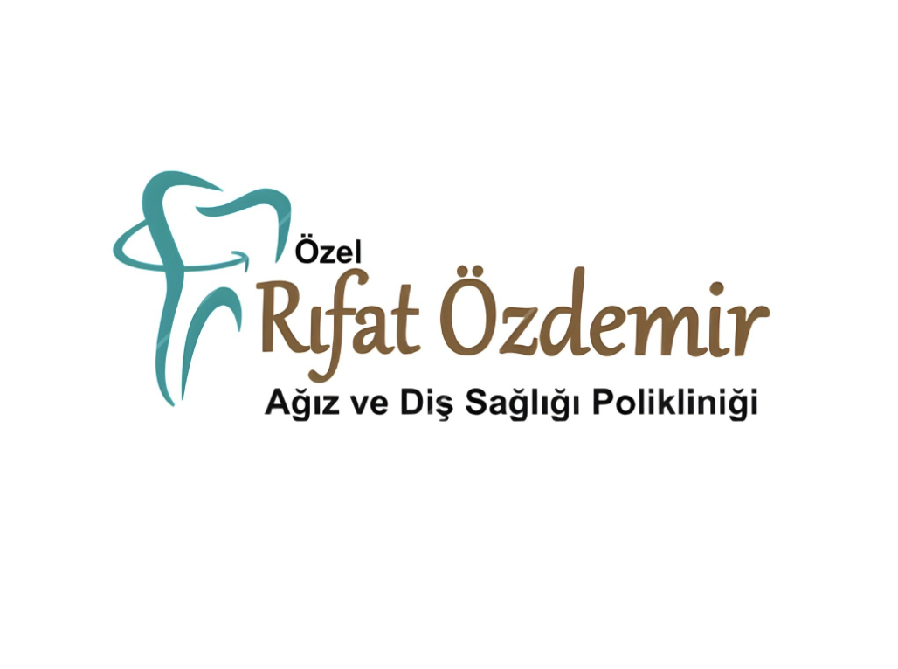
Yenilikçi tedavi yöntemlerimiz ve hasta memnuniyeti odaklı yaklaşımımızla Konya'da hizmetinizdeyiz. Modern altyapımız ve gelişmiş dijital sistemlerimizle tedavilerinizi hızlı, konforlu ve güvenilir şekilde tamamlıyoruz.
Modern teknoloji ve uzman kadromuzla sunduğumuz kapsamlı ağız ve diş sağlığı hizmetleri.
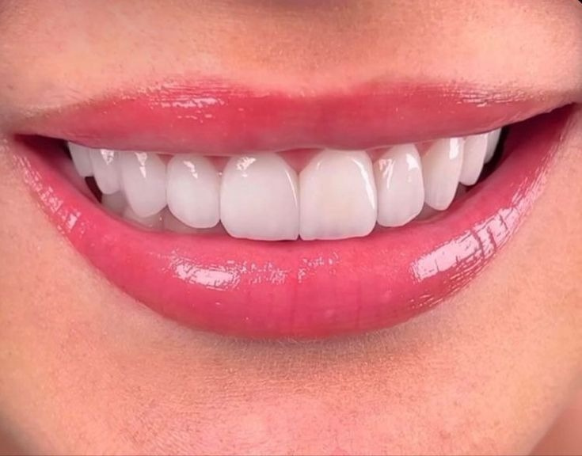
Hayalinizdeki kusursuz, simetrik ve doğal gülüşe kişiye özel tasarımla kavuşun.
Detaylı Bilgi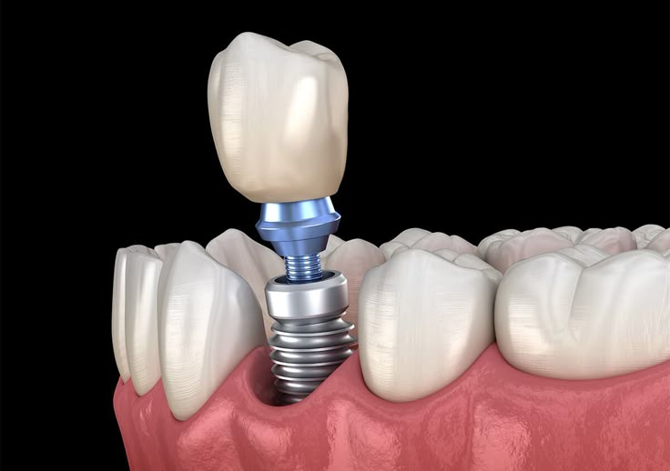
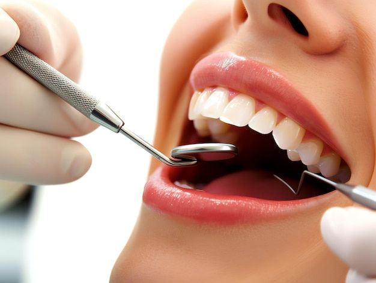
Hasarlı ve çürük dişlerinizi çekime gerek kalmadan, estetik ve modern yöntemlerle kurtarıyoruz.
Detaylı Bilgi
Diş eti morarması yapmayan, yüksek ışık geçirgenliğine sahip estetik kaplamalar.
Detaylı Bilgi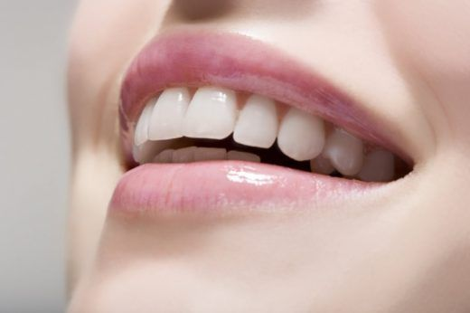
Minimum diş kesimi veya kesimsiz uygulanan ultra ince yaprak porselenler.
Detaylı Bilgi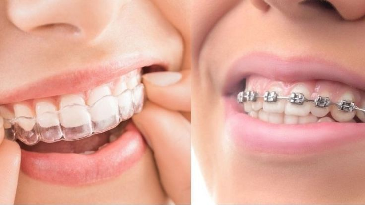
Çapraşık dişlerinize şeffaf plaklar (Invisalign) veya estetik braketlerle çözüm.
Detaylı Bilgi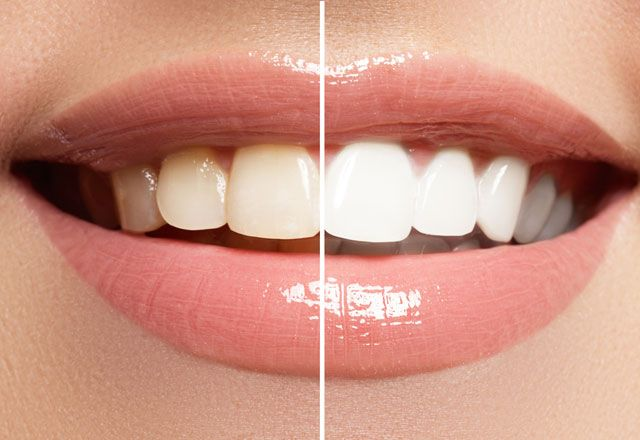
Lazer destekli clinic bleaching ile tek seansta güvenli ve kalıcı beyazlık.
Detaylı Bilgi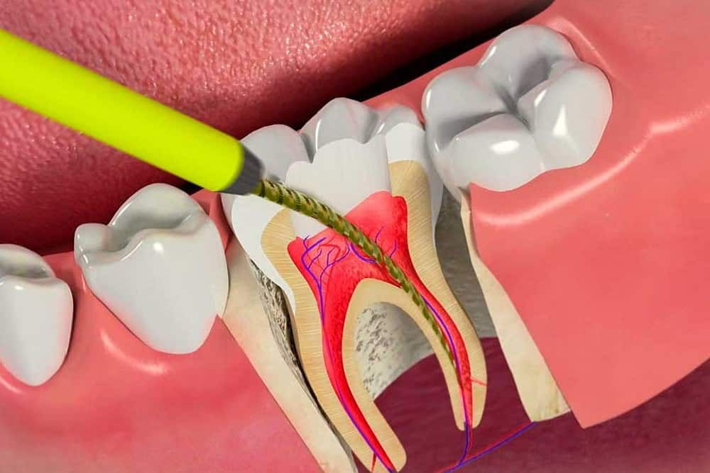
Şiddetli diş ağrılarına mikroskobik hassasiyetle ağrısız ve güvenilir tedavi.
Detaylı Bilgi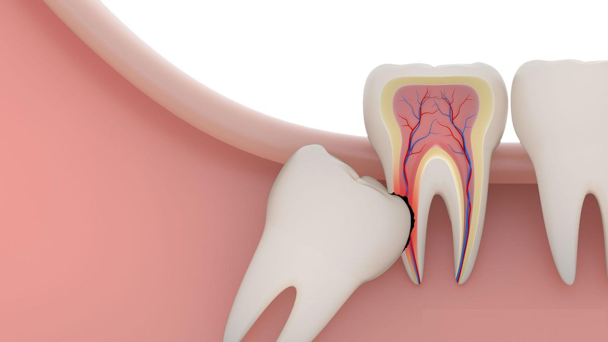
Ağrı veya bası yapan sorunlu 20'lik dişlerinize konforlu cerrahi müdahale.
Detaylı Bilgi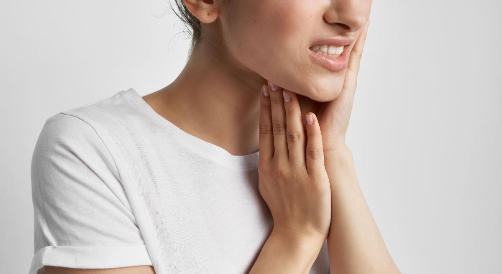
Gece diş sıkma (bruksizm) ağrılarına son verip yüz hattınızı inceltin.
Detaylı Bilgi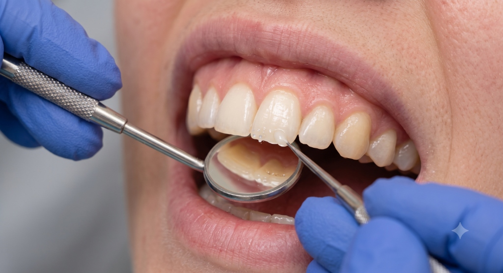
Çürük ve kırıkları doğal diş renginizle birebir uyuşan kompozitle onarıyoruz.
Detaylı Bilgi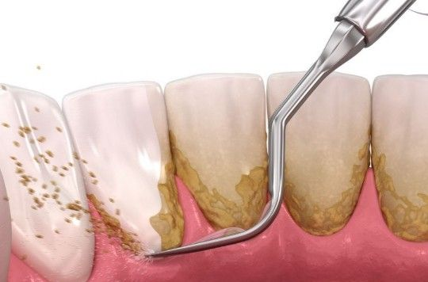
Ultrasonik cihazlarla diş eti kanamalarına ve plak birikimine son verin.
Detaylı Bilgi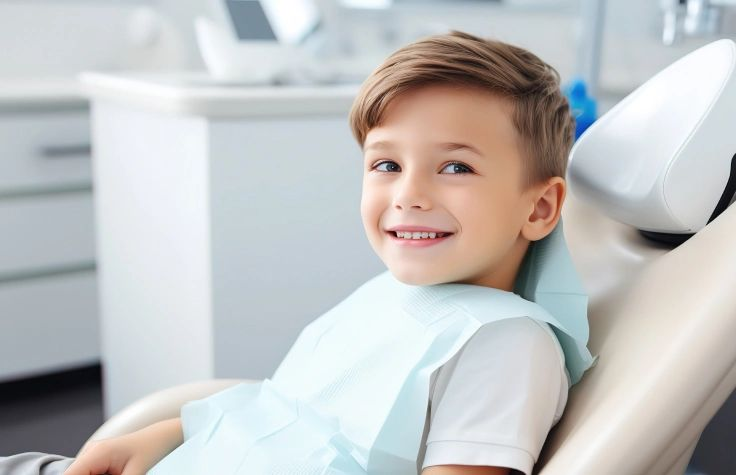
Çocuklarınızın diş hekimi korkusunu yenip eğlenceli ve koruyucu bakım sunuyoruz.
Detaylı Bilgi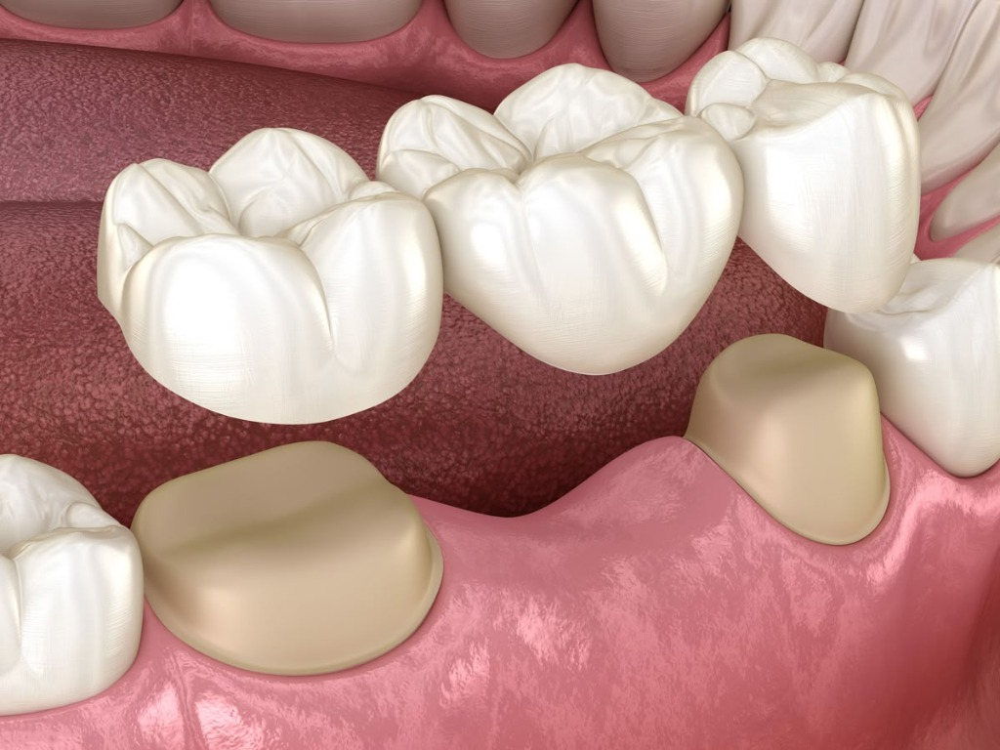
Eksik dişlerinizi fonksiyonel, rahat ve estetik protez çözümleriyle tamamlayın.
Detaylı Bilgi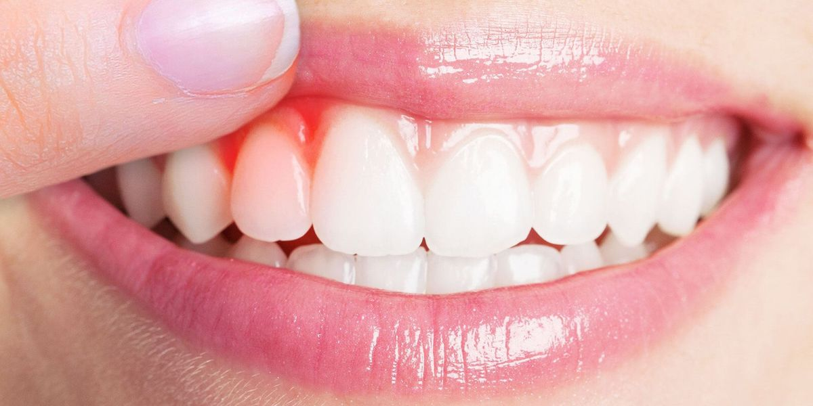
Diş eti çekilmeleri, iltihap ve diş sallanmalarına uzman müdahale.
Detaylı Bilgi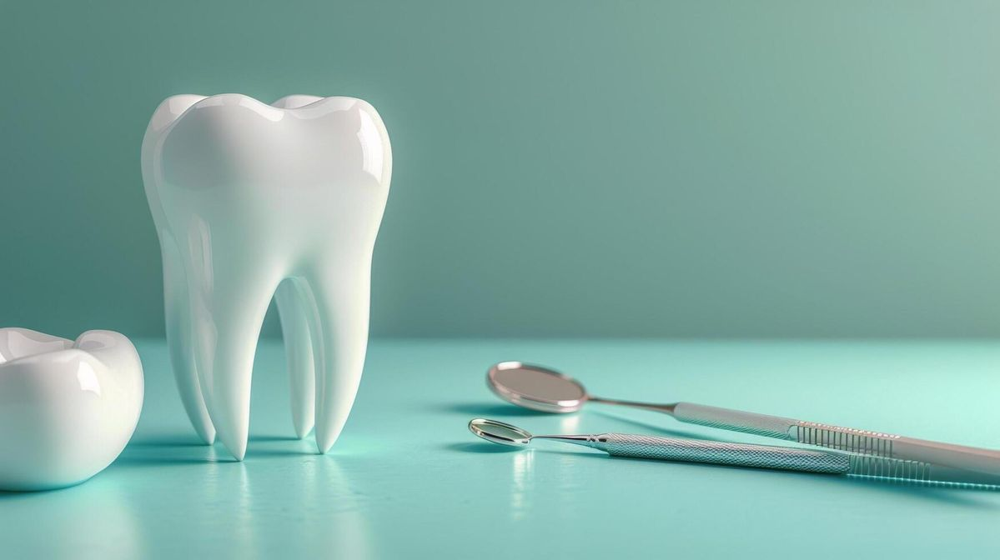
Çene kistleri, kemik grefti, sinus lifting ve tüm cerrahi operasyonlar.
Detaylı Bilgi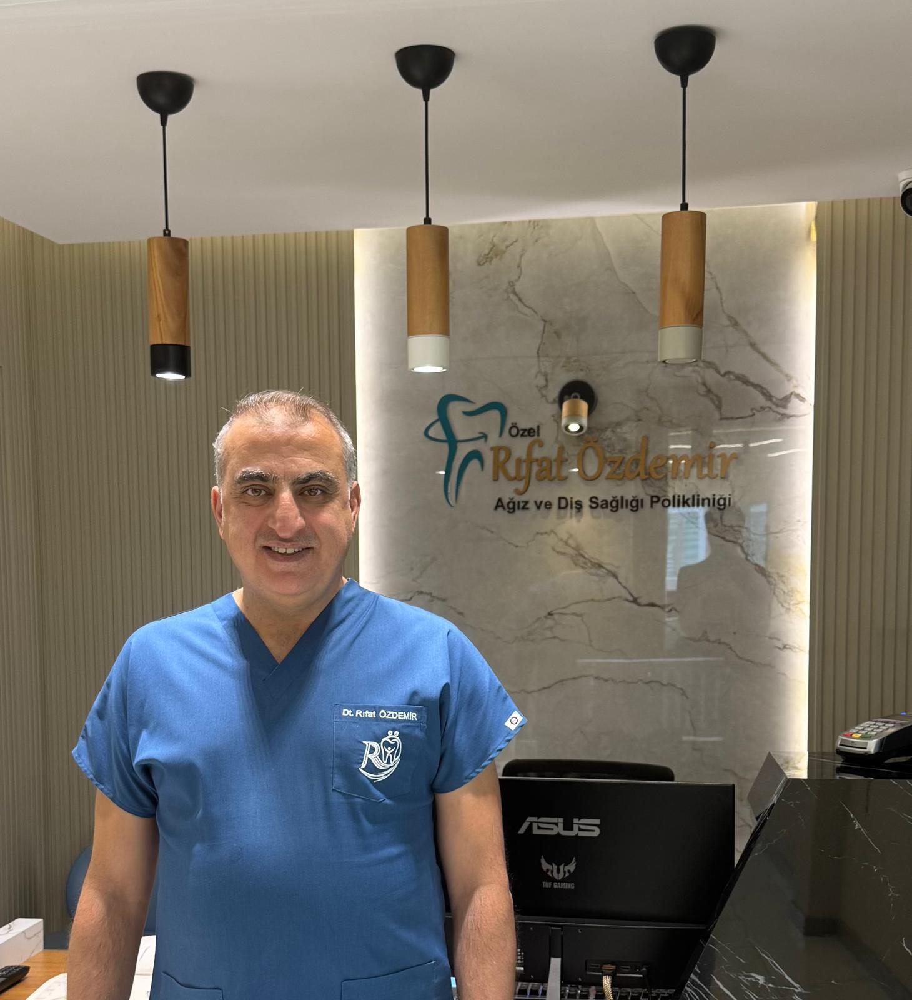
Diş Hekimi
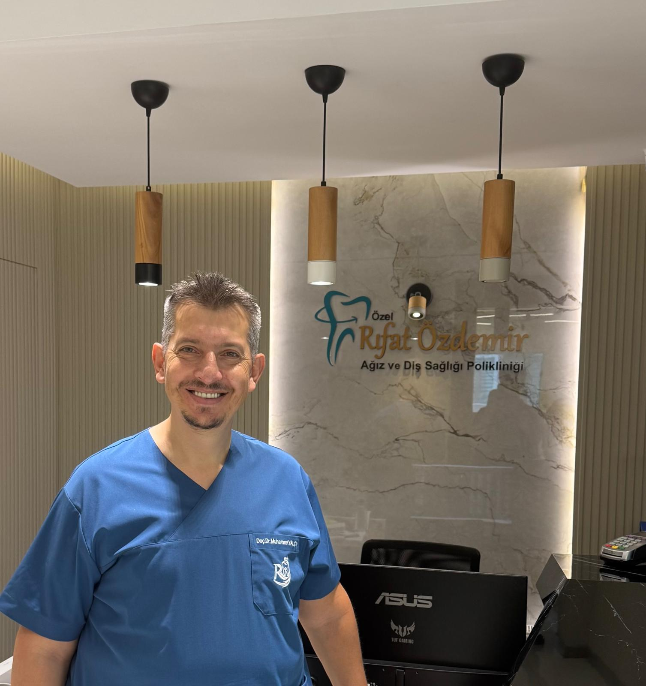
Restoratif Diş Tedavisi Uzmanı
Kliniğimiz merkezi bir konumda yer almakta olup, toplu taşıma ve özel araçla ulaşıma oldukça uygundur.
Adres: Feritpaşa Mh. Kızkulesi Sk. Elmacı İş Merkezi 2/1 Selçuklu/Konya
Telefon: 0332 236 68 68
E-posta: dtrifat@gmail.com
Çalışma Saatleri: Pzt - Cum | 09:00 - 17:00
Cumartesi | 09:00-15:00